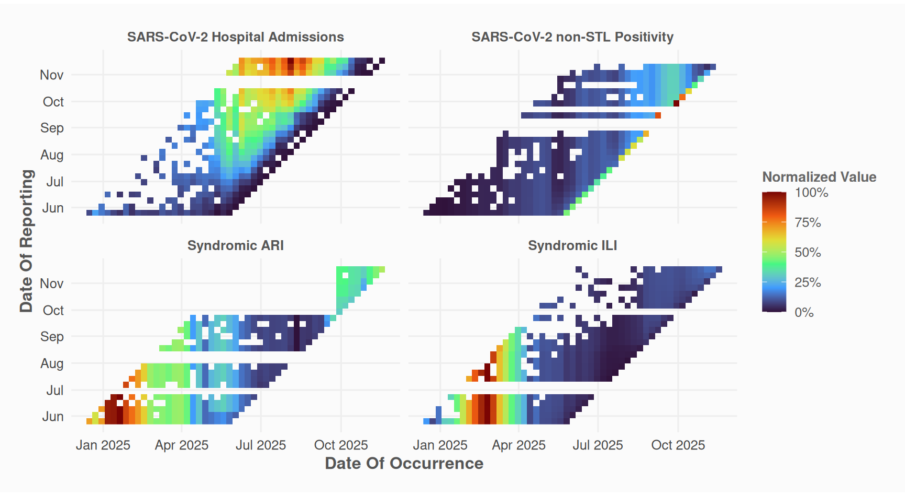
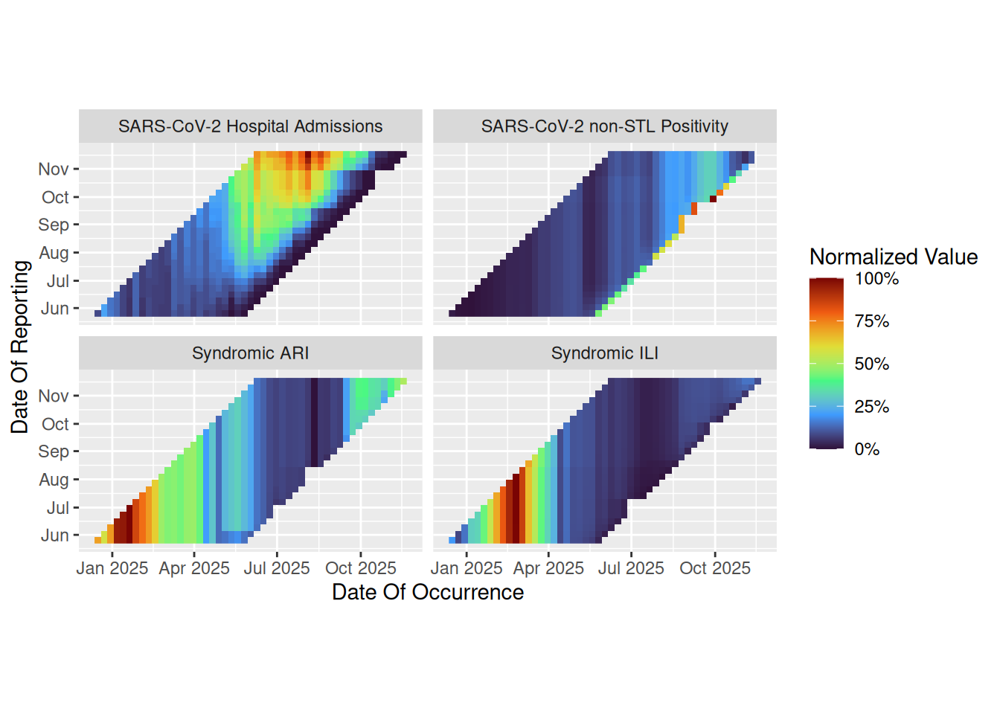
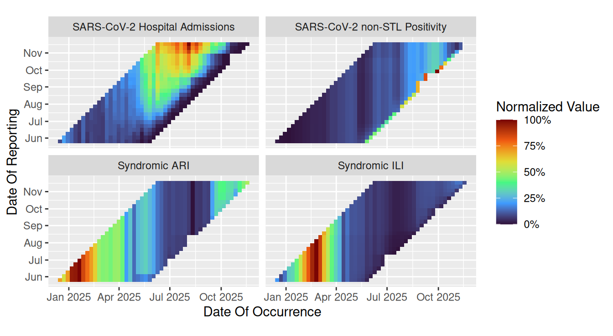
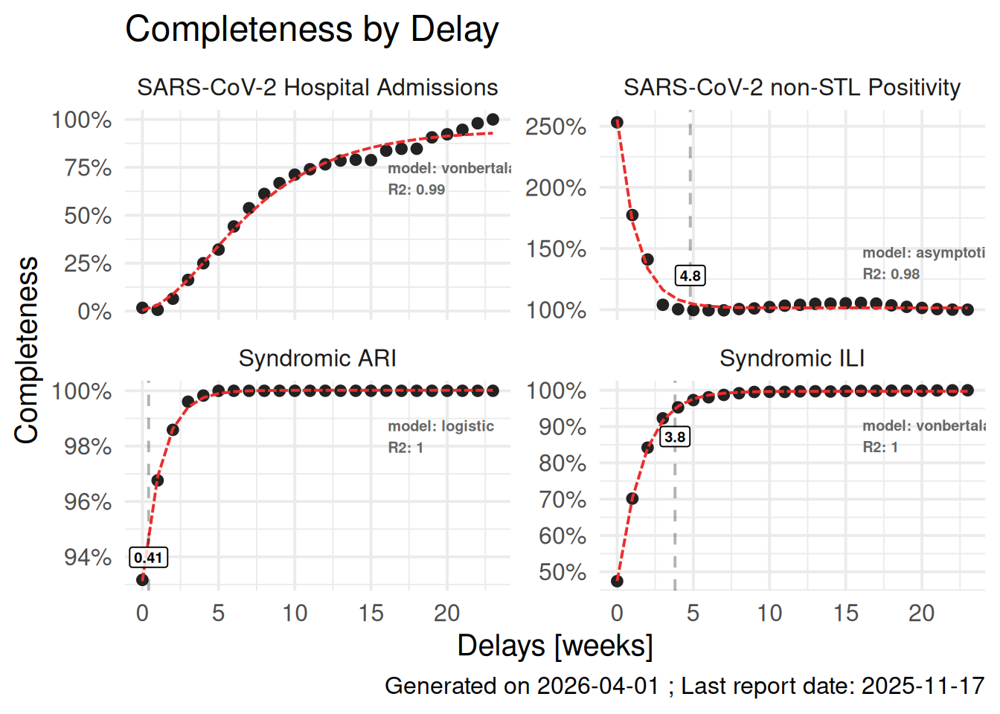
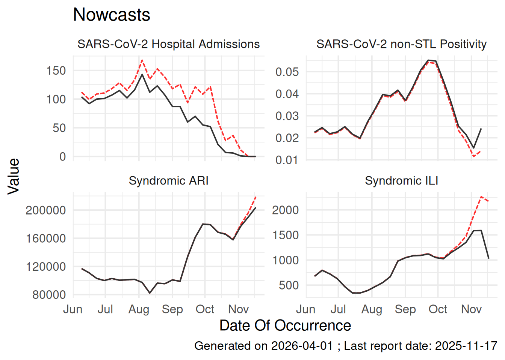

devtools::install_github("whocov/nowcastr")Nowcasting is the process of estimating the current state of a phenomenon when the data are incomplete due to reporting delays. The nowcastr package implements the chain-ladder method for nowcasting, supporting both non-cumulative delay-based estimation and model-based completeness fitting (e.g., logistic or Gompertz curves). This vignette provides a quick start guide to using the package with demo data.
Setup
The package is available on GitHub. Install it with:
Data Structure
Your dataset must contain at least three columns:
- occurrence date: when the event happened
- reporting date: when the event was reported
- value: the observed count/value
- <groups>: none, one or multiple grouping columns: e.g.
group_cols = c("group") # or c("region", "disease")
The package includes a demo dataset nowcast_demo that follows this structure
print(nowcast_demo)
#> # A tibble: 1,624 × 4
#> value date_occurrence date_report group
#> <dbl> <date> <date> <chr>
#> 1 251563 2024-12-16 2025-05-26 Syndromic ARI
#> 2 219818 2024-12-23 2025-05-26 Syndromic ARI
#> 3 219815 2024-12-23 2025-06-02 Syndromic ARI
#> 4 253451 2024-12-30 2025-05-26 Syndromic ARI
#> 5 253454 2024-12-30 2025-06-09 Syndromic ARI
#> 6 311660 2025-01-06 2025-05-26 Syndromic ARI
#> 7 311666 2025-01-06 2025-06-02 Syndromic ARI
#> 8 311654 2025-01-06 2025-06-09 Syndromic ARI
#> 9 311657 2025-01-06 2025-06-16 Syndromic ARI
#> 10 313798 2025-01-13 2025-05-26 Syndromic ARI
#> # ℹ 1,614 more rowsThe demo data also includes a group column for demonstrating grouped processing, though you can have multiple grouping columns.
Workflow
A typical nowcasting workflow with nowcastr involves the following steps.
1. Visualize Input Data
Before nowcasting, inspect the reporting pattern of your data:
nowcast_demo %>%
plot_nc_input(
option = "triangle",
col_date_occurrence = date_occurrence,
col_date_reporting = date_report,
col_value = value,
group_cols = "group"
)
The “millipede” plot provides an alternative view of delays:
nowcast_demo %>%
plot_nc_input(
option = "millipede",
col_date_occurrence = date_occurrence,
col_date_reporting = date_report,
col_value = value,
group_cols = "group"
)
2. Prepare Data (Optional)
You may want to fill missing values with the last known reporting values to ensure consistent time units:
data_filled <- nowcast_demo %>%
fill_future_reported_values(
col_date_occurrence = date_occurrence,
col_date_reporting = date_report,
col_value = value,
group_cols = "group",
max_delay = "auto"
)
data_filled %>%
plot_nc_input(
option = "triangle",
col_date_occurrence = date_occurrence,
col_date_reporting = date_report,
col_value = value,
group_cols = "group"
)
This step is optional; nowcast_cl can handle unfilled data.
3. Run Nowcast
Perform the nowcasting using the chain-ladder method:
nc_obj <-
data_filled %>%
nowcast_cl(
col_date_occurrence = date_occurrence,
col_date_reporting = date_report,
col_value = value,
group_cols = "group",
time_units = "weeks",
do_model_fitting = TRUE
)The nowcast_cl() function returns a nowcast_results object containing predictions, delay distributions, completeness estimates, and parameters.
S7::prop_names(nc_obj)
#> [1] "name" "params" "time_start" "time_end" "n_groups"
#> [6] "max_delay" "data" "completeness" "delays" "models"
#> [11] "results"4. Explore Results
Access the components of the result object:
nc_obj@results # Final nowcasted values
#> # A tibble: 95 × 7
#> group date_occurrence last_r_date delay value value_predicted completeness
#> <chr> <date> <date> <dbl> <dbl> <dbl> <dbl>
#> 1 SARS-Co… 2025-11-17 2025-11-17 0 0 0 0.00391
#> 2 SARS-Co… 2025-11-10 2025-11-17 1 0 0 0.0316
#> 3 SARS-Co… 2025-11-03 2025-11-17 2 1 11.4 0.0878
#> 4 SARS-Co… 2025-10-27 2025-11-17 3 6 36.5 0.164
#> 5 SARS-Co… 2025-10-20 2025-11-17 4 7 27.8 0.252
#> 6 SARS-Co… 2025-10-13 2025-11-17 5 21 61.5 0.341
#> 7 SARS-Co… 2025-10-06 2025-11-17 6 52 122. 0.427
#> 8 SARS-Co… 2025-09-29 2025-11-17 7 55 109. 0.507
#> 9 SARS-Co… 2025-09-22 2025-11-17 8 70 121. 0.577
#> 10 SARS-Co… 2025-09-15 2025-11-17 9 60 93.9 0.639
#> # ℹ 85 more rows
nc_obj@delays # Delay distribution
#> # A tibble: 96 × 5
#> group delay n completeness_obs completeness_modelled
#> <chr> <dbl> <int> <dbl> <dbl>
#> 1 SARS-CoV-2 Hospital Admis… 0 10 0.0169 0.00391
#> 2 SARS-CoV-2 Hospital Admis… 1 10 0.00670 0.0316
#> 3 SARS-CoV-2 Hospital Admis… 2 10 0.0646 0.0878
#> 4 SARS-CoV-2 Hospital Admis… 3 10 0.163 0.164
#> 5 SARS-CoV-2 Hospital Admis… 4 10 0.250 0.252
#> 6 SARS-CoV-2 Hospital Admis… 5 10 0.321 0.341
#> 7 SARS-CoV-2 Hospital Admis… 6 10 0.442 0.427
#> 8 SARS-CoV-2 Hospital Admis… 7 10 0.537 0.507
#> 9 SARS-CoV-2 Hospital Admis… 8 10 0.611 0.577
#> 10 SARS-CoV-2 Hospital Admis… 9 10 0.668 0.639
#> # ℹ 86 more rows
nc_obj@completeness # Data with completeness estimates
#> # A tibble: 2,478 × 8
#> group date_occurrence date_report value delay last_value completeness
#> <chr> <date> <date> <dbl> <dbl> <dbl> <dbl>
#> 1 SARS-CoV-2 H… 2025-11-17 2025-11-17 0 0 0 1
#> 2 SARS-CoV-2 H… 2025-11-10 2025-11-17 0 1 0 1
#> 3 SARS-CoV-2 H… 2025-11-10 2025-11-10 0 0 0 1
#> 4 SARS-CoV-2 H… 2025-11-03 2025-11-17 1 2 1 1
#> 5 SARS-CoV-2 H… 2025-11-03 2025-11-10 0 1 1 0
#> 6 SARS-CoV-2 H… 2025-11-03 2025-11-03 0 0 1 0
#> 7 SARS-CoV-2 H… 2025-10-27 2025-11-17 6 3 6 1
#> 8 SARS-CoV-2 H… 2025-10-27 2025-11-10 2 2 6 0.333
#> 9 SARS-CoV-2 H… 2025-10-27 2025-11-03 0 1 6 0
#> 10 SARS-CoV-2 H… 2025-10-20 2025-11-17 7 4 7 1
#> # ℹ 2,468 more rows
#> # ℹ 1 more variable: reportweight <dbl>
str(nc_obj@params) # Parameters used
#> List of 16
#> $ col_date_occurrence : chr "date_occurrence"
#> $ col_date_reporting : chr "date_report"
#> $ col_value : chr "value"
#> $ group_cols : chr "group"
#> $ time_units : chr "weeks"
#> $ max_delay : NULL
#> $ max_reportunits : num 10
#> $ max_completeness : num 5
#> $ min_completeness_samples : num 1
#> $ use_weighted_method : logi TRUE
#> $ do_propagate_missing_delays : logi FALSE
#> $ do_model_fitting : logi TRUE
#> $ model_names : chr [1:6] "monomolecular" "vonbertalanffy" "logistic" "gompertz" ...
#> $ do_use_modelled_completeness: logi TRUE
#> $ rss_threshold : num 0.01
#> $ output : chr "all"Plot the results:
plot(nc_obj, which = "delays") # Delay distribution
plot(nc_obj, which = "results") # Nowcast time series
Open a Shiny app to explore results group by group:
explore_nowcast(nc_obj)How It Works
The chain-ladder method estimates “completeness” for each delay bucket:
- Delay = reporting date - occurrence date
- Completeness = observed value / last reported value (approximation of true value)
- Average completeness per delay bucket (across occurrence dates)
- Nowcast = observed value / average completeness
Recent occurrence dates have shorter delays and lower completeness. The method upweights these observations to estimate the true count.
Grouped Processing
You can nowcast multiple groups (e.g., regions, diseases) in a single call by specifying multiple grouping columns:
nowcast_cl(
# ...
group_cols = c("region", "disease")
)Other Utility Functions
Calculate Retro Scores of input data
retro_score = number of actual value changes / max possible value changes [0-1]
# Calculate retro-scores (= number of actual value changes / max possible value changes)
nowcast_demo %>%
calculate_retro_score(
col_date_occurrence = date_occurrence,
col_date_reporting = date_report,
col_value = value,
group_cols = c("group")
)
#> # A tibble: 4 × 4
#> group n_changes max_retro_adj retro_score
#> <chr> <dbl> <dbl> <dbl>
#> 1 SARS-CoV-2 non-STL Positivity 385 575 0.670
#> 2 SARS-CoV-2 Hospital Admissions 374 575 0.650
#> 3 Syndromic ILI 371 575 0.645
#> 4 Syndromic ARI 299 575 0.52Remove duplicated data
This is the opposite of fill_future_reported_values(). This can be useful to reduce data size without losing information.
# Remove duplicate reported values (same value and higher reporting date)
nowcast_demo %>%
rm_repeated_values(
col_date_occurrence = date_occurrence,
col_date_reporting = date_report,
col_value = value,
group_cols = c("group")
)
#> # A tibble: 1,624 × 4
#> value date_occurrence date_report group
#> <dbl> <date> <date> <chr>
#> 1 12 2024-12-16 2025-05-26 SARS-CoV-2 Hospital Admissions
#> 2 31 2024-12-23 2025-05-26 SARS-CoV-2 Hospital Admissions
#> 3 22 2024-12-30 2025-05-26 SARS-CoV-2 Hospital Admissions
#> 4 21 2024-12-30 2025-06-02 SARS-CoV-2 Hospital Admissions
#> 5 18 2025-01-06 2025-05-26 SARS-CoV-2 Hospital Admissions
#> 6 19 2025-01-06 2025-06-16 SARS-CoV-2 Hospital Admissions
#> 7 11 2025-01-13 2025-05-26 SARS-CoV-2 Hospital Admissions
#> 8 7 2025-01-20 2025-05-26 SARS-CoV-2 Hospital Admissions
#> 9 8 2025-01-20 2025-06-16 SARS-CoV-2 Hospital Admissions
#> 10 17 2025-01-27 2025-05-26 SARS-CoV-2 Hospital Admissions
#> # ℹ 1,614 more rows